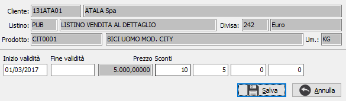
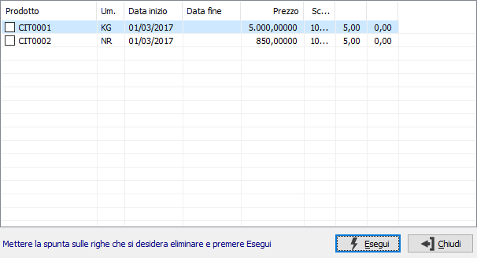
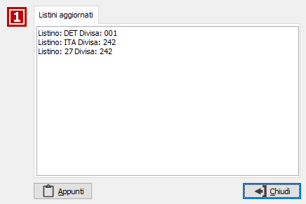

Gestione variazione prezzi da documenti
La gestione è attiva solo se è a livello di configuratore di applicazione (XConfig) è consentito all'utente oppure al gruppo di utenti, di effettuare la variazione prezzi dai documenti e se sulla relativa causale è stata attivata la gestione spuntando la casella "Variazione prezzi"; inoltre nell'anagrafica del cliente o del fornitore movimentato deve essere impostato il campo "Tipo aggiornamento prezzi" che indica dove deve essere aggiornato il prezzo modificato: sui listini, prezzi speciali o contratti, questi ultimi devono essere contratti di soli prodotti senza scaglioni di quantità.

Durante l'inserimento/variazione dei dati di rigo se l'utente modifica manualmente il prezzo proposto dalla procedura, e sono presenti le condizioni riportate sopra, si apre la finestra di variazione prezzi: viene riportata come data inizio validità la data del documento, modificabile, la data fine validità viene proposta con la fine validità del listino/contratto attivo, il prezzo inserito sul rigo e, se presenti e gestiti anche gli sconti. La pressione del pulsante Salva memorizza temporaneamente la variazione che sarà salvata solo dopo il salvataggio del documento.
Se attiva la gestione dei prezzi per variante in configurazione, è presente il campo Variante e l'omonima colonna nella griglia.

Se prima del salvataggio si decidesse di annullare una o più variazioni fatte è possibile tramite il pulsante presente alla sinistra del campo prezzo sulle righe del documento; il pulsante è attivo se è stata registrata almeno una variazione di prezzo e se premuto visualizza una finestra in cui l'utente può visualizzare tutte le variazioni effettuate e decidere quale delle variazioni apportate vuole eliminare apponendo la spunta e premendo il pulsante Esegui; premendo Chiudi non viene eliminata nessuna variazione.
Come detto in precedenza le variazioni rimangono in memoria e vengono registrate solo dopo il salvataggio del documento; se le variazioni sono state fatte su documenti passivi e riguardano listini di acquisto a cui sono collegati listini di vendita, verrà effettuato anche l'aggiornamento di questi listini come previsto nelle regole di aggiornamento presenti sulla definizione del listino di acquisto.

Al termine della registrazione e degli eventuali aggiornamenti viene mostrata una finestra informativa che riporta sia i listini aggiornati, sia eventuali messaggi di errore verificatisi durante la registrazione o l'aggiornamento.